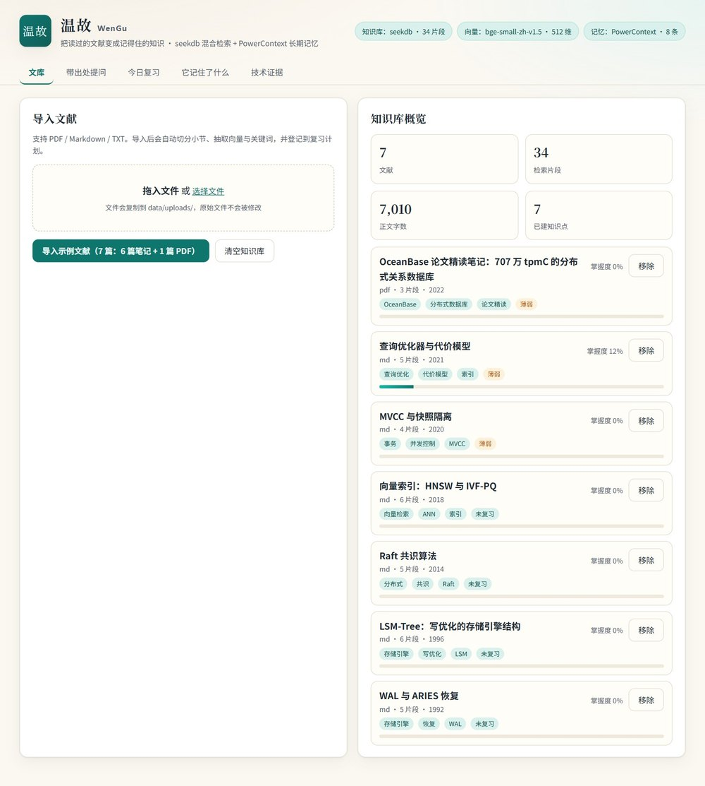
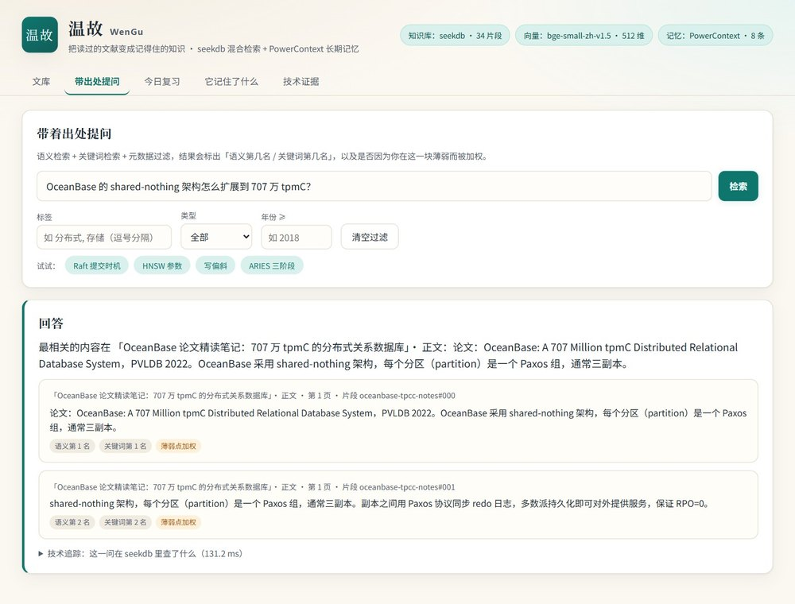
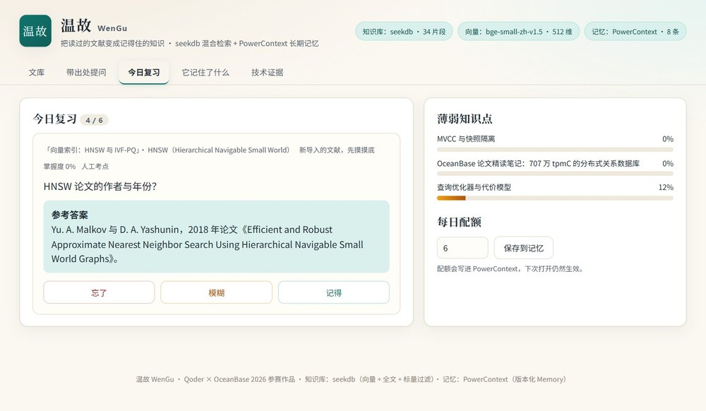
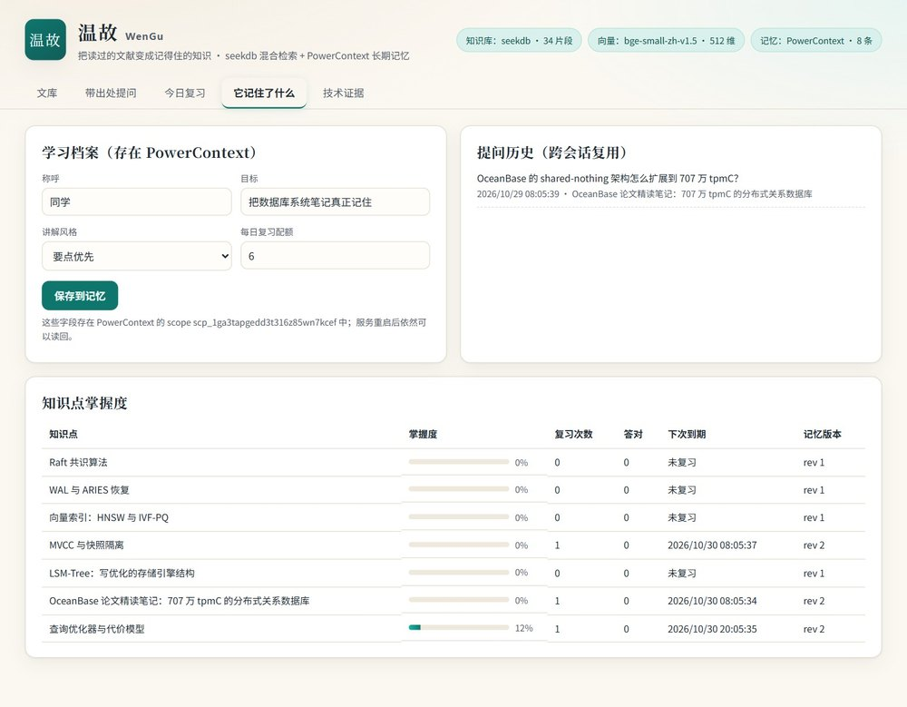
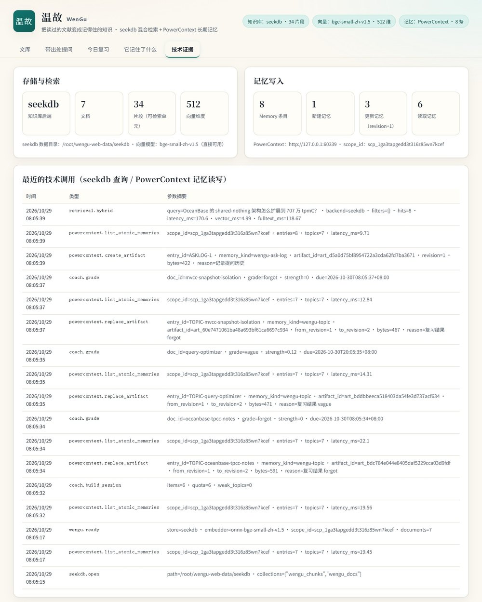

几十篇 PDF 笔记，关键词各不相同；用通用搜索只能拿到链接，拿不到「第几节第几页」的原文， 更不知道这段话和其它笔记的关系。
笔记工具只负责存，不负责让你记住；通用问答工具不知道你在哪薄弱， 每次都从头问起。
PDF/Markdown 按小节切分，每段算 512 维向量，连同文档、小节、页码、年份、标签一起写进 seekdb：HNSW（cosine）建向量索引，IK 分词建全文索引。
一个问题同时做向量召回与全文召回，用 RRF 融合，再按你的薄弱点加权， 返回带出处的原文摘录，并标注「语义第 N 名 / 关键词第 N 名」。
每次复习的自评结果写进 PowerContext 的 artifact， 每次更新推进一个 revision；下次打开按掌握度和到期时间重新排期。





| 技术 | 在项目里做什么 | 怎么核对 |
|---|---|---|
| seekdb（嵌入式） | 知识库主存储：wengu_chunks 存正文 + 512 维向量 + 元数据，wengu_docs 存文献元数据；
HNSW（cosine）向量检索、IK 中文全文检索、where 下推年份/类型/文档过滤；
每次检索还会调用 seekdb 原生 hybrid_search（数据库侧 RRF）做交叉验证。 |
records/tech.json 的 store；records/ask.json 的
trace.vector_hits / fulltext_hits |
| PowerContext 1.4.1 | 长期记忆：学习偏好、每个知识点的掌握度与到期时间、提问历史。新建走 create_artifact，
更新走 replace_artifact（带 expected_etag），每次复习推进一个 revision；
启动时 list_atomic_memories 恢复全部状态。 |
records/tech.json 的 powercontext.create_artifact / replace_artifact；
memory_after_restart.json |
| 本地向量模型 | bge-small-zh-v1.5 的 ONNX 版本，在本地做中文语义向量；没有模型文件时自动降级为字符 n-gram 哈希向量， 功能不中断。 | records/tech.json 的 embedder |
records/ask_after_restart.json 的 weak_boosted 字段。
cd qoder/wengu
pip install -e ".[seekdb]"
./scripts/verify.sh依次执行：自检 → 导入示例语料 → 带出处提问 → 组卷 → 16 个单测 →
端到端验证（含重启 Server 与记忆复用），产物写入 records/。
state_reused = true1.18×
需要无 Linux 也能复现时，仓库里带有 GitHub Actions 工作流（.github/workflows/wengu-verify.yml），
会在 ubuntu-latest 上安装嵌入式 seekdb 并产出同样的 records/。
cd qoder/wengu
python -m venv .venv && . .venv/bin/activate
pip install -e ".[seekdb]"
wengu serve --host 0.0.0.0 --port 8000打开 http://<机器>:8000，点「导入示例文献」即可体验。
cd qoder/wengu
python -m venv .venv
.\.venv\Scripts\activate
pip install -e .
wengu serve知识库自动回退 SQLite（numpy 余弦 + BM25），记忆仍由 PowerContext 提供，功能完整。
需求拆解、关键问题与修复、验证命令见 docs/qoder-development-record.md；
该文件同样用于整理 Qoder 对话截图与账号 UID。